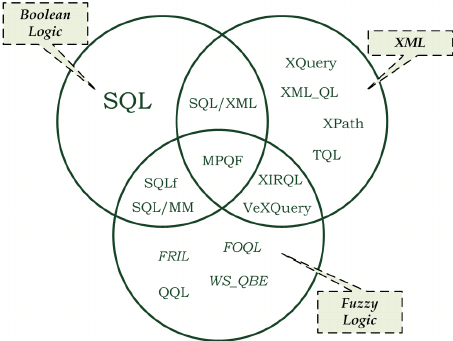
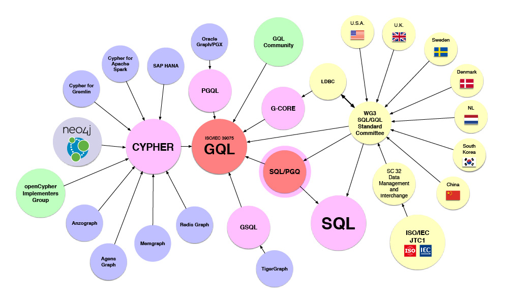

Introduction
Definition of query languages and their role in retrieving and manipulating data.
The importance of query languages in various domains, including databases and information retrieval.
Relational Database Query Languages
1. SQL (Structured Query Language):
- Overview of SQL as a standard language for managing and querying relational databases.
- Basic SQL syntax, including SELECT, INSERT, UPDATE, DELETE statements.
2. Data Definition Language (DDL):
- Explanation of DDL statements for defining and managing database structures.
- Examples include CREATE TABLE, ALTER TABLE, DROP TABLE.
3. Data Manipulation Language (DML):
- Explanation of DML statements for manipulating data within tables.
- Examples include SELECT, INSERT, UPDATE, DELETE.
4. JOINs and Relationships:
- Understanding JOIN operations for querying data from multiple tables.
- Exploring relationships between tables using foreign keys.
Non-Relational Database Query Languages
1. MongoDB Query Language:
- Overview of query language for MongoDB, a NoSQL database.
- Basic MongoDB query syntax for document-based data retrieval.
2. GraphQL:
- Introduction to GraphQL as a query language for APIs.
- The flexibility of GraphQL in specifying the shape and structure of the response.
Information Retrieval Query Languages
XPath:
- Explanation of XPath as a query language for XML documents.
- XPath expressions for navigating and querying XML data.
XQuery:
- Overview of XQuery for querying XML data.
- XQuery functions and expressions for filtering and transforming XML.
SPARQL:
- Introduction to SPARQL as a query language for querying RDF data in the Semantic Web.
- SPARQL query patterns and basic syntax.
Text Search Query Languages
Regular Expressions (Regex):
- Explanation of regular expressions for text pattern matching.
- Basic regex syntax and common use cases.
Lucene Query Syntax:
- Overview of Lucene query syntax for full-text search.
- Lucene query operators and wildcard characters.
Classification of query languages


Advantages of Query Languages
1. Structured Data Retrieval:
- Efficient retrieval and manipulation of structured data in databases.
2. Flexibility:
- The flexibility of query languages in expressing complex data retrieval requirements.
3. Standardization:
- Standardized query languages (e.g., SQL) enable interoperability and ease of learning.
Challenges of Query Languages
1. Learning Curve:
- Learning curve for mastering the syntax and nuances of query languages.
2. Complexity:
- Complexity in writing complex queries, especially for beginners.
3. Performance Optimization:
- The need for performance optimization in large datasets and complex queries.
Choosing the Right Query Language
Project Considerations
- Factors influencing the choice: data model, system requirements, team expertise.
Performance
- Considering the performance implications of different query languages.
Compatibility
- Evaluating the compatibility of query languages with existing systems.
Conclusion
Recap of key points about query languages in different domains.
Emphasize the importance of choosing the right query language based on project requirements.
Encourage users to explore and deepen their understanding of query languages for effective data retrieval and manipulation.